Refqa is a comprehensive Islamic companion app I designed and built end to end — Quran, Hadith, Tafsir, prayer times, adhan, duas, and daily spiritual habit-tracking, all in one bilingual (Arabic/English), offline-first Flutter app. It's the kind of app where "it mostly works" isn't good enough: the adhan has to fire at the exact second, five times a day, without launching the app UI, and a user's location and recitation audio can never leave their device.
I own the full stack: the Flutter/Riverpod app layer, a custom native Kotlin pipeline for unattended background adhan playback, and every architectural decision around privacy, offline resilience, and real-device verification. Since the first release, the app has grown to cover the Prophet's ﷺ Seerah and lineage, the Ten Promised Paradise, the 99 Names of Allah, live Qur'an radio, and per-prayer alert styles — each shipped with the same bar: real-device verification, not just code review.
A browsable Surah/Juz'/Hizb index with search, plus a full 604-page Madani Mushaf renderer with authentic RTL page-swipe direction and inline ayah markers, multiple reciters, and khatm (completion) tracking.
A custom Kotlin AlarmManager + ForegroundService pipeline plays the full call to prayer at the exact computed time — no Activity launch, no Flutter engine involved at fire time.
Tasmee' compares spoken recitation against the Quran text using entirely on-device speech recognition — audio never touches a server, with a graceful fallback message on hardware that lacks offline Arabic support.
Multiple calculation methods with automatic, location-aware method selection, plus a tilt-free light beam on the Qibla screen that points along the bearing as you turn — anchored to the dial's measured centre.
Each of the five prayers is independently set to adhan, notification tone, vibrate-only, or silent, with its own muezzin — one notification channel per style, because Android freezes a channel's sound and vibration at creation and ignores every later edit.
Browse and play live Qur'an radio stations with automatic retry on flaky streams, or browse reciters as profiles and play any surah in a chosen voice — all coordinated with the adhan pipeline so only one audio source ever plays at a time.
The Prophet's ﷺ full Seerah in chapters and his lineage (Nasab) as a visual chain, plus profiles of the ten companions given the glad tidings of Paradise — the historically certain portion of the lineage visually distinct from the traditionally held extension.
Asma Allah al-Husna, each with its meaning and an explanation, bundled offline and shareable as an image card like any verse.
Range-scoped activity summaries, a time-spent-per-category donut breakdown, Hijri/Gregorian monthly calendars, streaks, and a GitHub-style contribution heatmap driven by real engagement, not just opening a screen.
One search box across surah names, verse text, and hadith, with number-aware jump-to (Western or Arabic-Indic digits) and Arabic-normalized matching that ignores diacritics and spelling variants.
Coordinates are scrubbed before any crash report is sent; no accounts, no ads, no third-party analytics SDKs.
The Flutter layer follows a strict feature-first data/domain/presentation split, with Riverpod (freezed union states for real async lifecycles) managing everything above the repository boundary and sqflite backing structured local data. But the adhan feature couldn't live in Dart alone: Android kills the Flutter engine when the app isn't foregrounded, and the adhan has to fire exactly on time regardless. So the unattended path drops to native Kotlin entirely — an exact AlarmManager alarm wakes a BroadcastReceiver, which starts a mediaPlayback ForegroundService that reads the audio file and plays it, with zero Dart execution required at fire time.
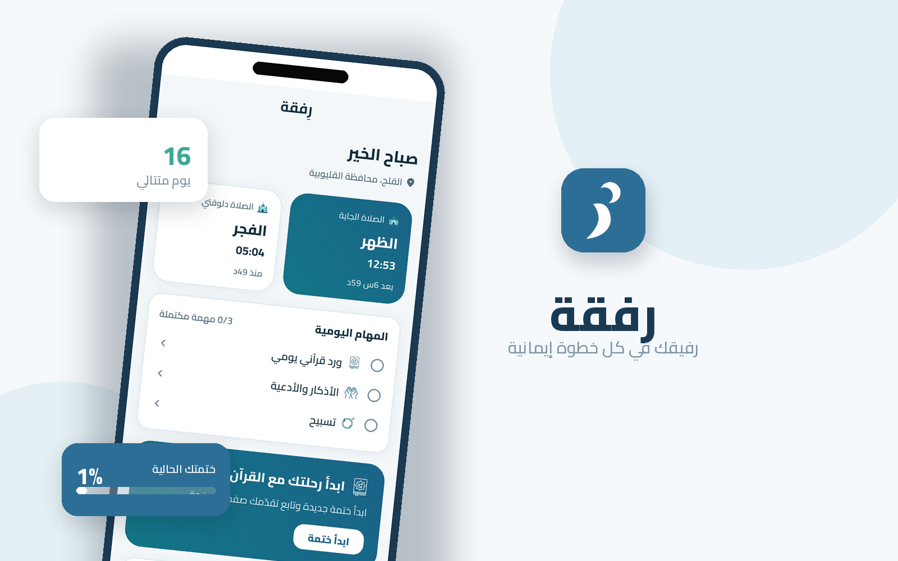
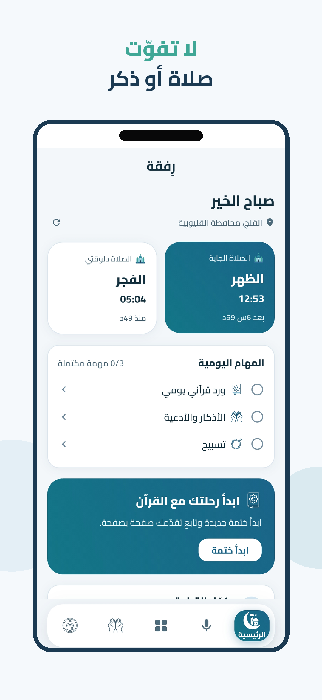
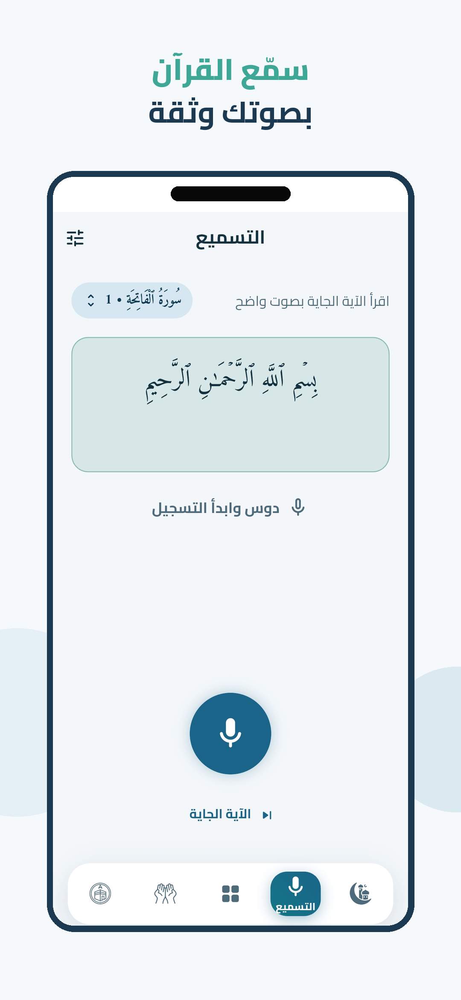
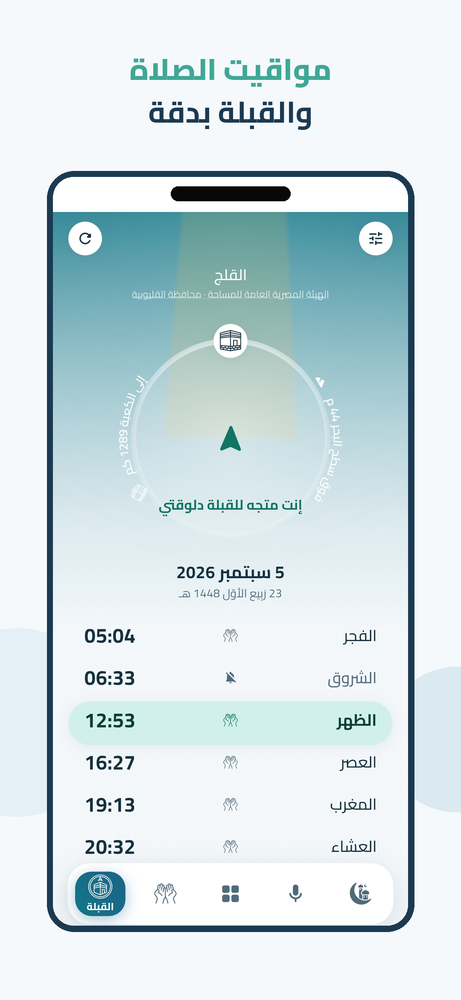
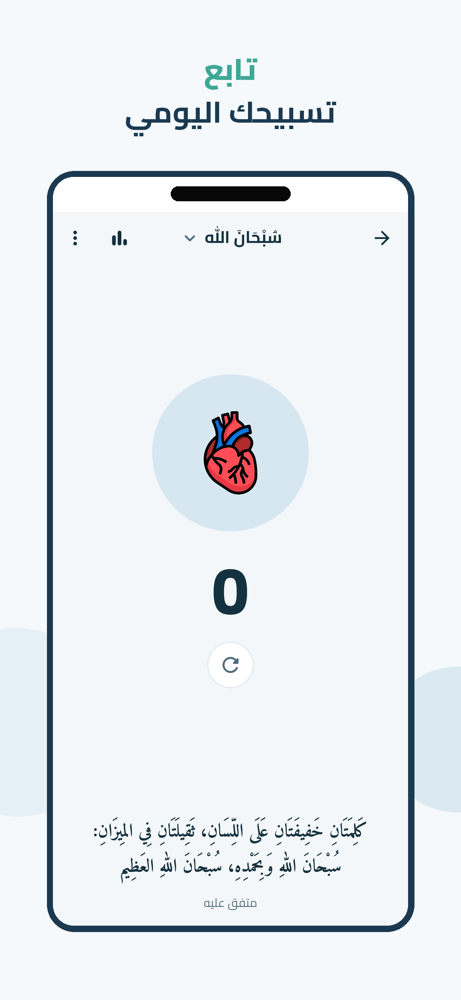
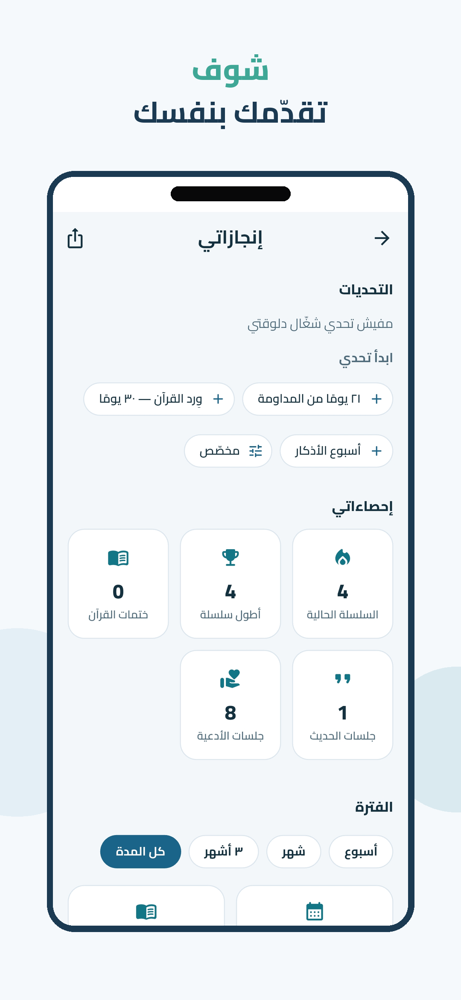
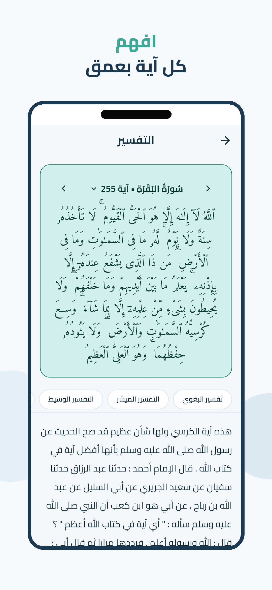
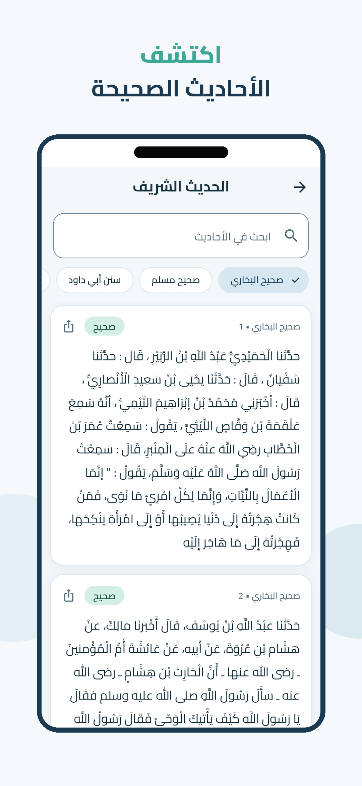
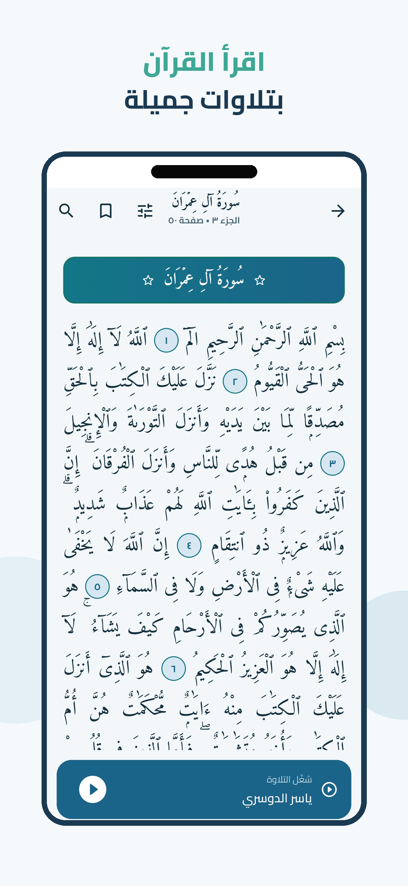
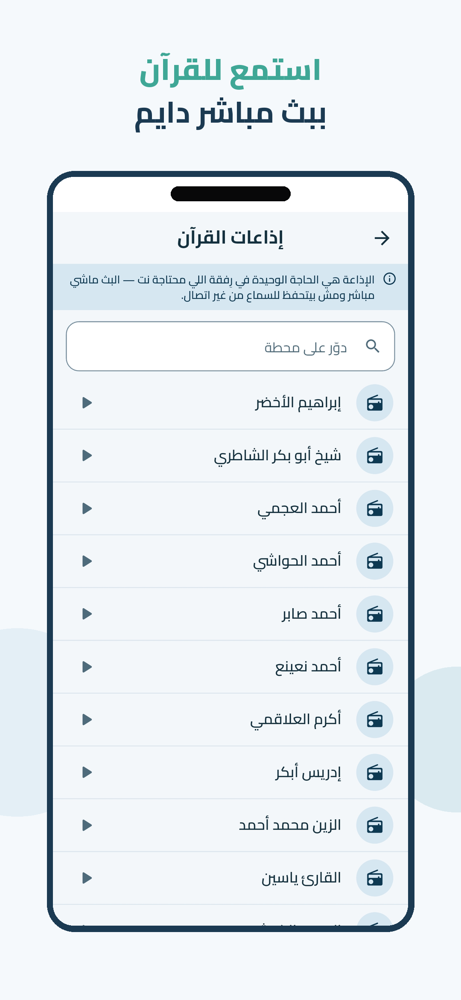
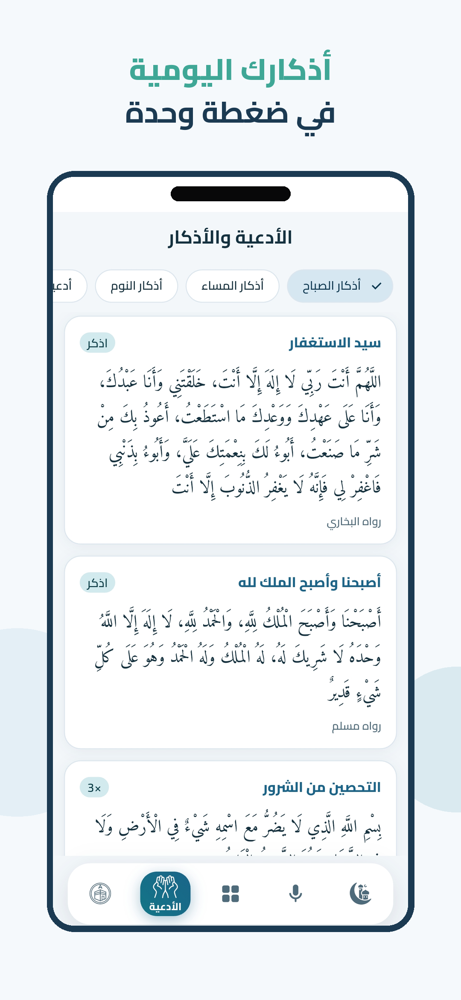
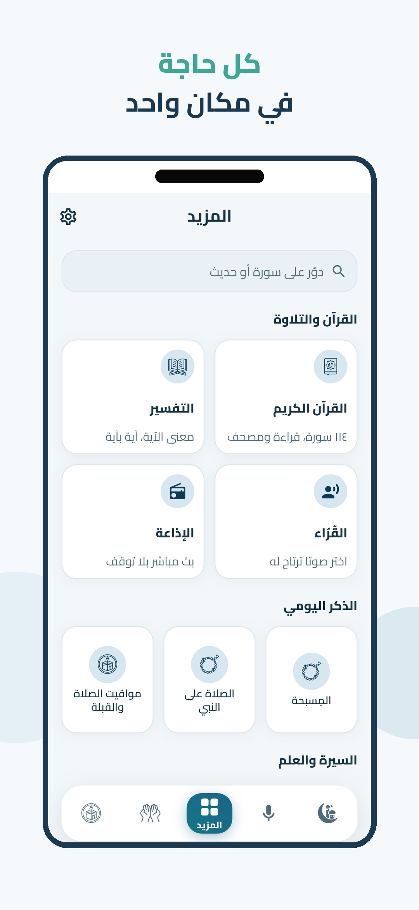
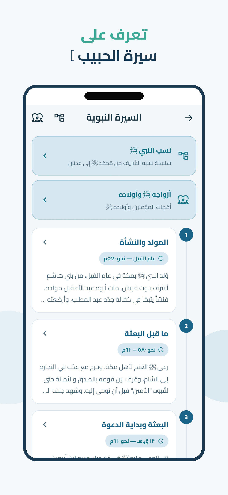
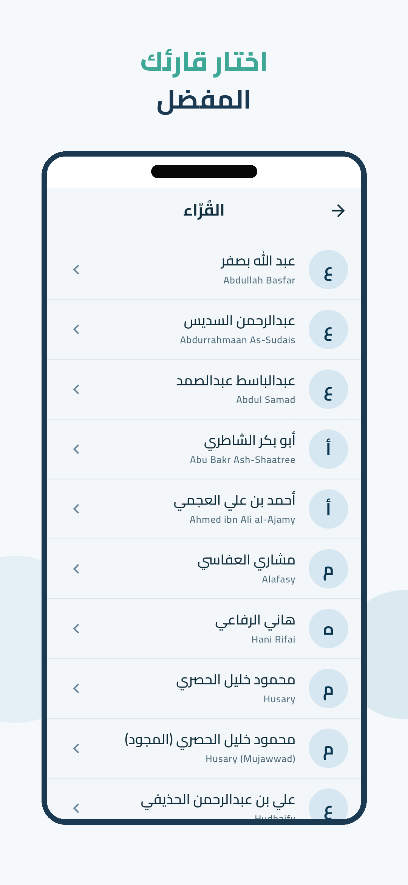
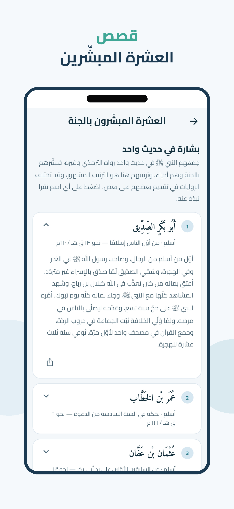
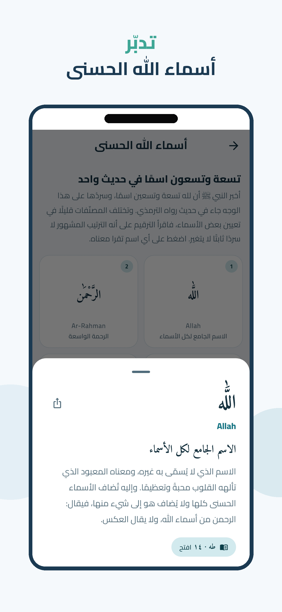
R8's resource shrinker was stripping the adhan/salawat audio files from release APKs because they were referenced dynamically by name at runtime, not by a static R.raw reference the shrinker could trace. Fixed with a res/raw/keep.xml rule and verified by unzipping the actual shipped APK to confirm the files survived.
Git history traced a channel to a commit that created it pointing at a sound resource added in a later commit — any device that ran that window cached the channel as permanently silent, since Android fixes a channel's sound at creation. Fixed by bumping the channel id and making the sound state part of the id, so toggling it in-app actually takes effect.
Honoring a full custom recitation range built a 6,236-item playlist queue; publishing that to Android's platform MediaSession crosses a Binder transaction capped near 1MB, which would throw TransactionTooLargeException. Caught it before it shipped by capping what gets published to the media session while keeping the full queue in memory for playback logic.
An earlier unattended-adhan implementation used a full-screen intent — but launching an Activity is that primitive's literal definition, so the app UI popped over the lock screen at every prayer. Replaced it with the native AlarmManager → ForegroundService pipeline described above, which plays audio with no Activity involved at all, and removed the now-unnecessary USE_FULL_SCREEN_INTENT permission (avoiding an unnecessary Play Console alarm-functionality declaration).
A user-selectable vibrate-only prayer alert read as doing nothing. The platform's own vibration history proved it was firing to the millisecond — but a notification channel created with vibration enabled and no explicit pattern inherits Android's stock waveform, the identical buzz every other app plays. Nothing distinguished it but the absence of a sound, which is not a cue a user can perceive. Fixed with a deliberate long-short-long waveform, and the channel id bumped because Android freezes a channel's vibration at creation. A later "still not working" report turned out to be a different diagnosis entirely - two build flavours were installed side by side, and the one carrying the fix had its notification permission revoked by a reinstall, caught by reading the permission grant state rather than trusting the report's premise.
Users could configure a range spanning two surahs, but the audio players built their playlists from the currently open surah and ignored the saved range entirely — a same-surah range only ever "worked" by coincidence. Fixed by expanding any range into global ayah numbers and building both readers' playlists from that, with a regression test specifically covering a boundary that crosses two surahs.